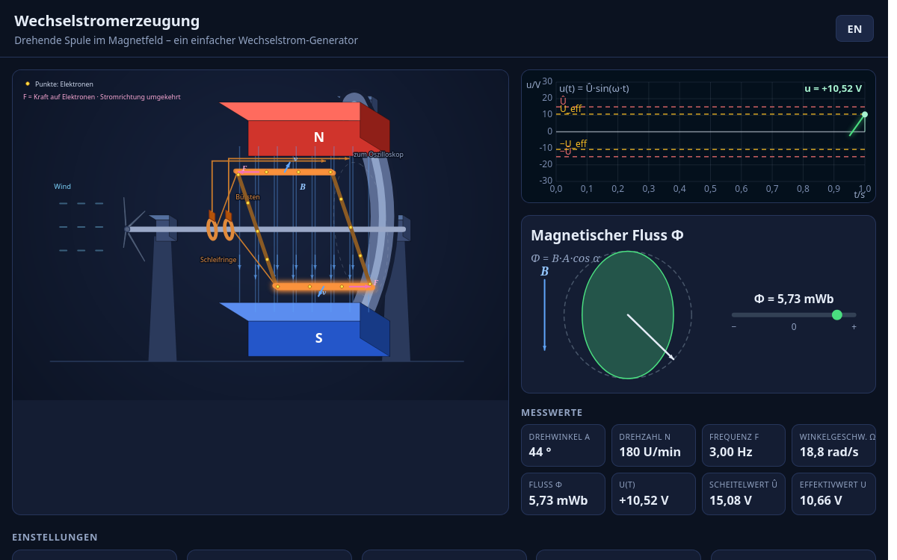
Simulation 01
Wechselstromerzeugung
Drehende Spule im Magnetfeld – ein einfacher Wechselstrom-Generator: Induktion, magnetischer Fluss und die entstehende sinusformige Spannung.
Simulation öffnen →Willkommen! Auf dieser Seite finden Sie alle interaktiven Simulationen der Lehrveranstaltung Grundlagen Elektrotechnik – vom einfachen Wechselstrom-Generator bis zum Transformator und Drehstrom. Jede Simulation läuft direkt im Browser, ganz ohne Installation.
Auf der Lernplattform finden Sie interaktive Übungen und Aufgaben zur Elektrotechnik. Der Benutzername dient ausschließlich Ihrer individuellen Lernerfahrung (z. B. zur Zuordnung Ihres Lernfortschritts) und wird nicht weiterverarbeitet.
Das Passwort wird vom Dozenten geteilt.
Zur LernplattformAuf Icedrive finden Sie die Leitfäden zu allen Themenblöcken sowie erklärende Videos, die die Simulationen und Grundlagen Schritt für Schritt durchgehen.
Den Link zum Icedrive-Ordner erhalten Sie vom Dozenten.
Leitfäden (PDF)ErklärvideosÜbungsmaterialien
Drehende Spule im Magnetfeld – ein einfacher Wechselstrom-Generator: Induktion, magnetischer Fluss und die entstehende sinusformige Spannung.
Simulation öffnen →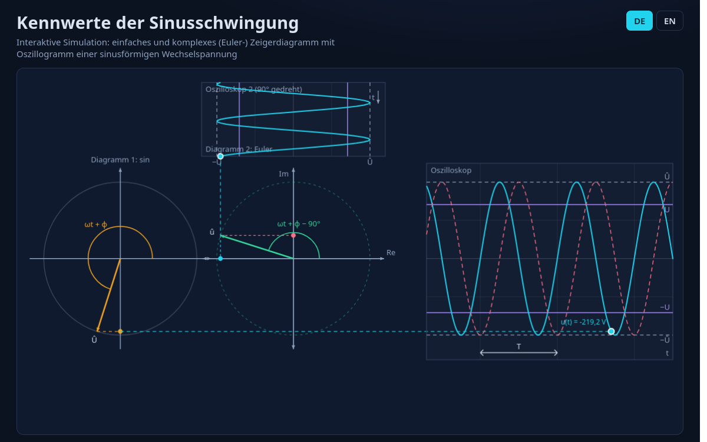
Scheitelwert, Effektivwert, Frequenz, Periodendauer und Phasenwinkel der Sinusspannung interaktiv untersuchen.
Simulation öffnen →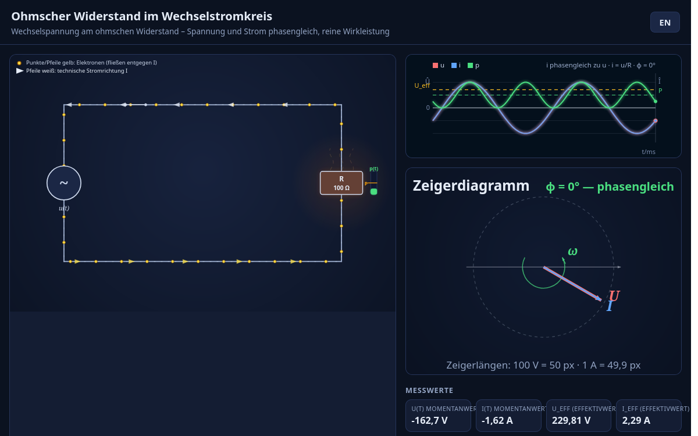
Wechselspannung am ohmschen Widerstand – Spannung und Strom sind phasengleich, es entsteht reine Wirkleistung.
Simulation öffnen →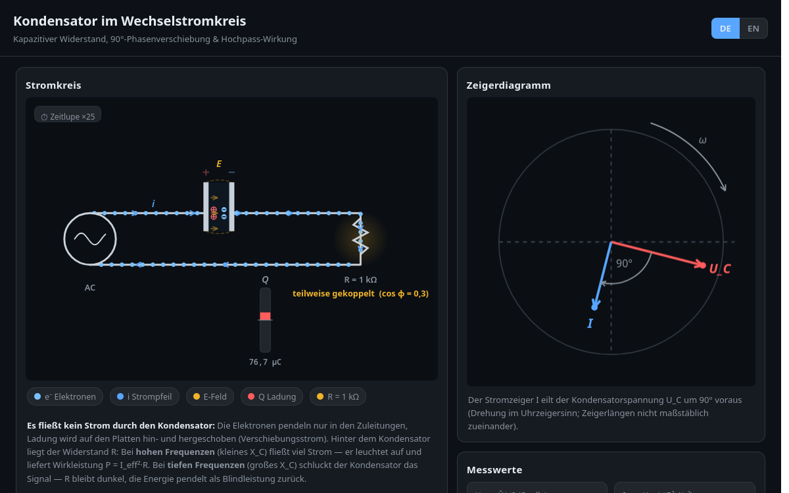
Der Strom eilt der Spannung um 90° voraus – kapazitiver Blindwiderstand XC und seine Frequenzabhängigkeit.
Simulation öffnen →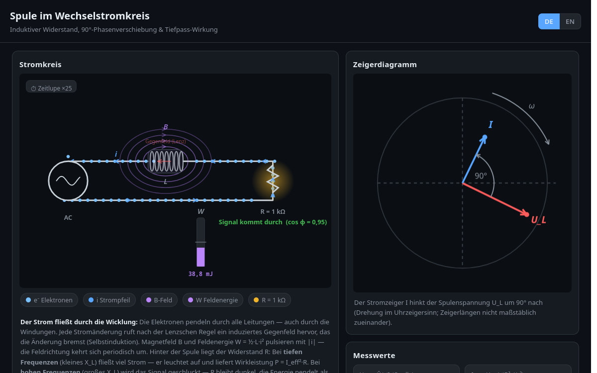
Die Spannung eilt dem Strom um 90° voraus – induktiver Blindwiderstand XL und seine Frequenzabhängigkeit.
Simulation öffnen →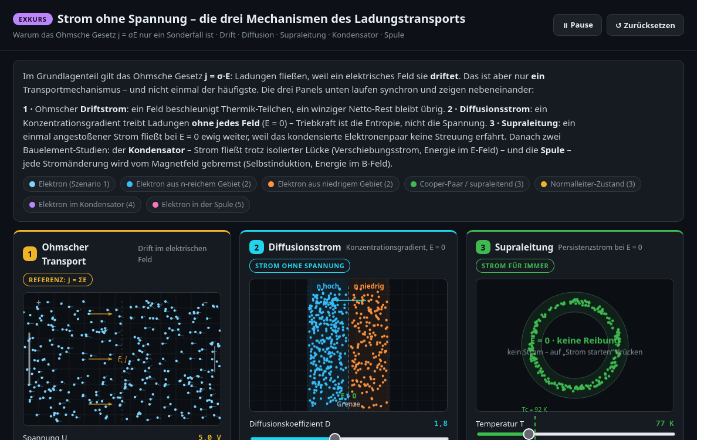
Exkurs: Warum j = σE nur ein Sonderfall ist – ohmscher Driftstrom, Diffusionsstrom am pn-Übergang und der persistierende Supraleitungsstrom nebeneinander.
Simulation öffnen →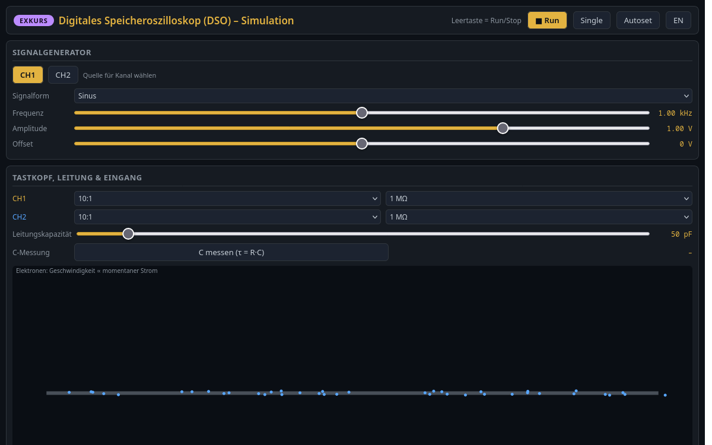
Exkurs: Messen wie mit einem echten Oszilloskop – Abtastung, Triggerung, AC/DC-Kopplung, Cursor und FFT zum Kennenlernen.
Simulation öffnen →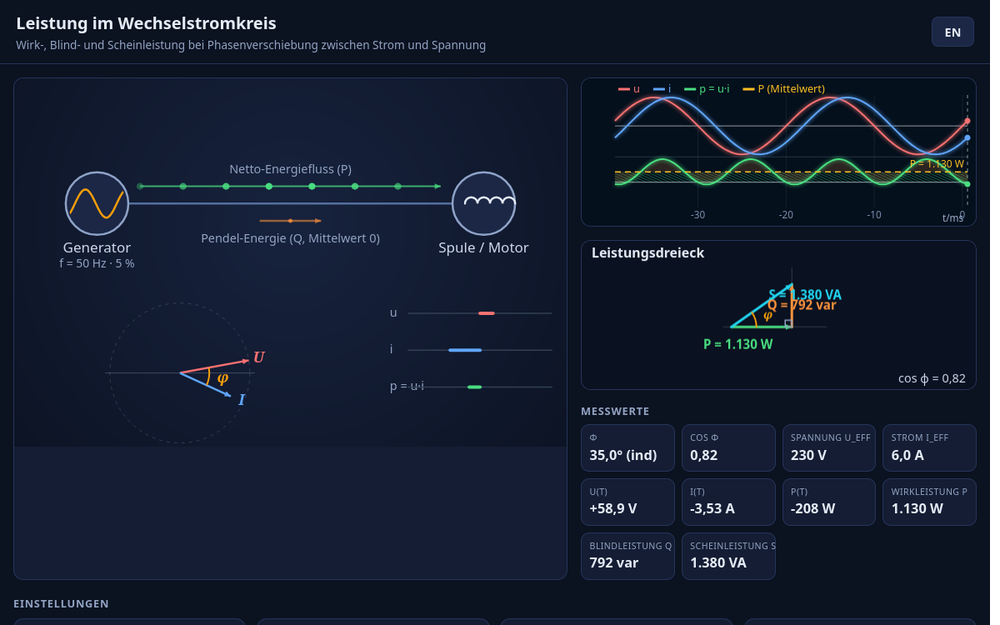
Wirk-, Blind- und Scheinleistung sowie der Leistungsfaktor cos φ bei Phasenverschiebung zwischen Strom und Spannung.
Simulation öffnen →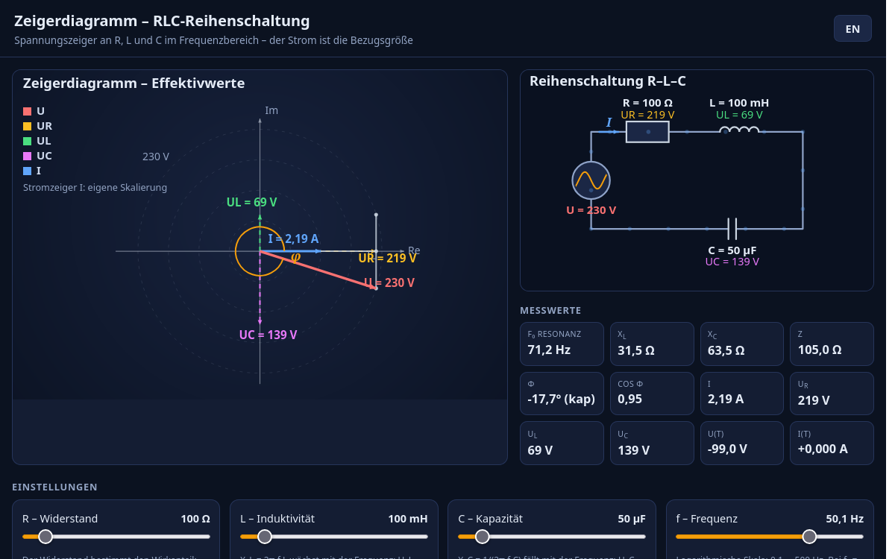
Spannungszeiger an R, L und C im Frequenzbereich – der Strom ist die Bezugsgröße, aus den Zeigern wird die Spannung.
Simulation öffnen →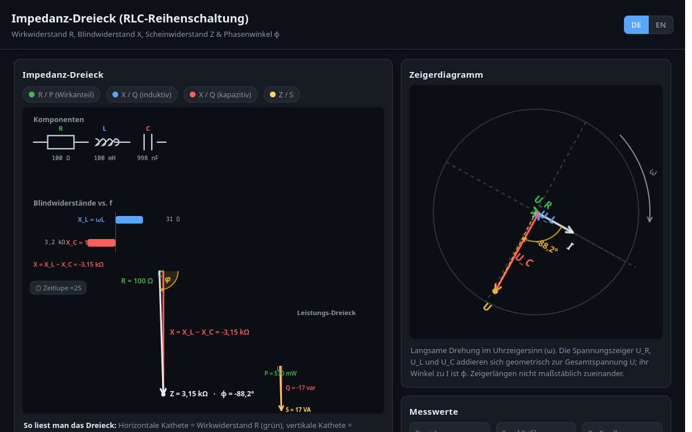
Scheinwiderstand Z aus Wirkwiderstand R und Blindwiderstand X – das Impedanzdreieck als Rechenschema der Wechselstromtechnik.
Simulation öffnen →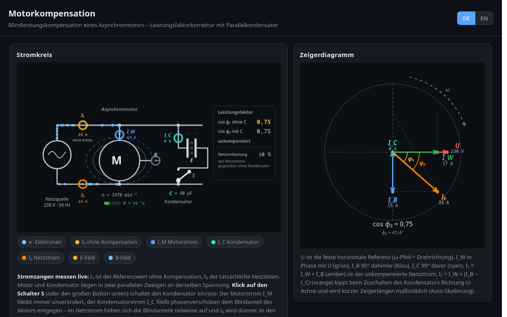
Blindleistung einer Asynchronmaschine kompensieren und den Leistungsfaktor cos φ verbessern – warum sich das lohnt.
Simulation öffnen →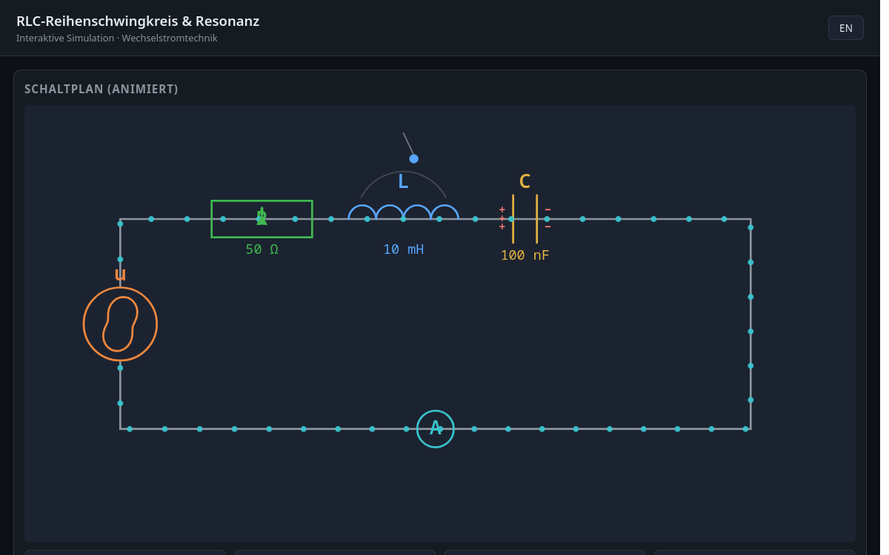
Resonanz, Güte und Bandbreite – der Schwingkreis als frequenzselektives Netzwerk und die Resonanzüberhöhung.
Simulation öffnen →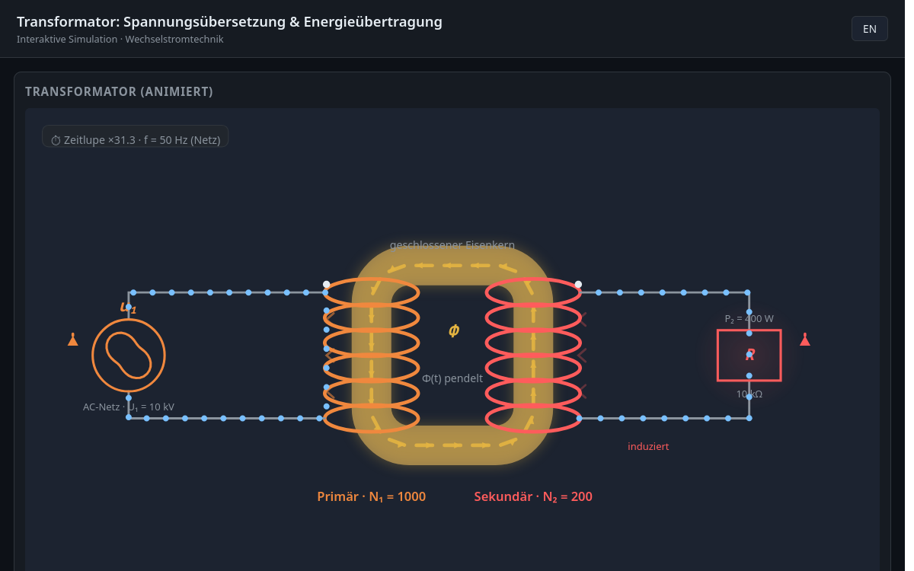
Übersetzungsverhältnis und Windungszahlen – wie der Transformator Spannungen anpasst und Energie überträgt.
Simulation öffnen →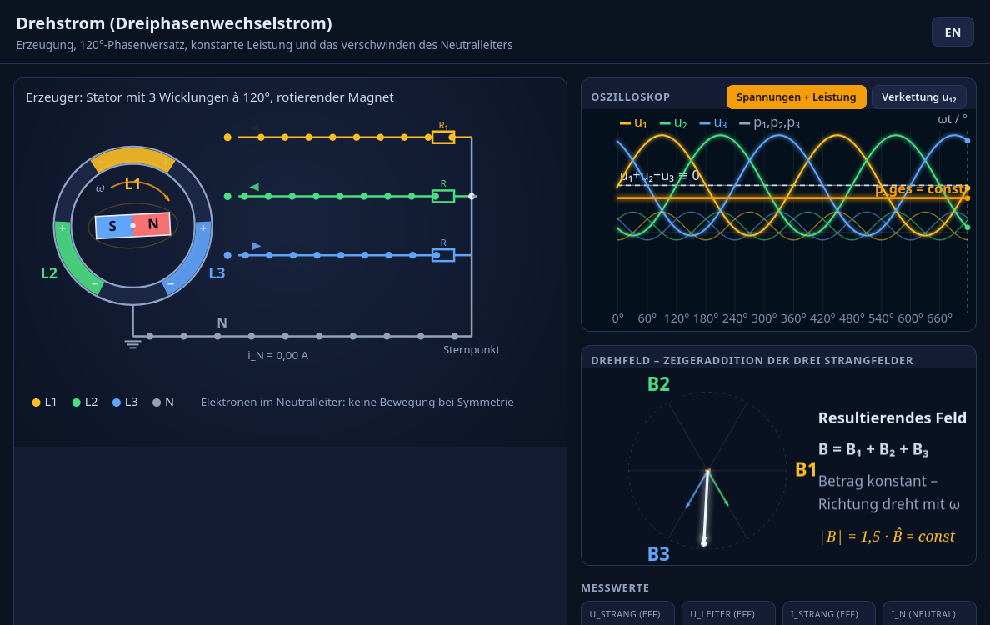
Erzeugung, 120°-Phasenversatz, konstante Leistung und das Verschwinden des Neutralleiters bei symmetrischer Last.
Simulation öffnen →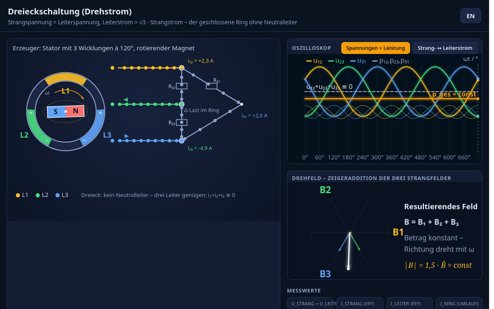
Strangspannung = Leiterspannung, Leiterstrom = √3 · Strangstrom – der geschlossene Ring ohne Neutralleiter.
Simulation öffnen →